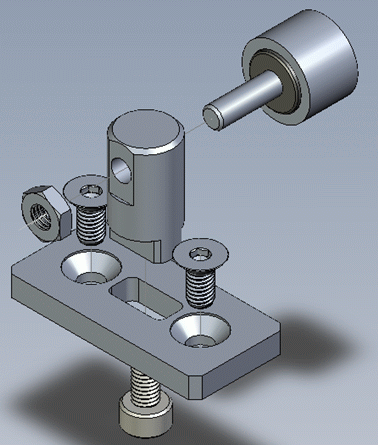
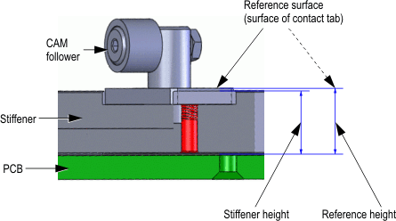

Direct-Probe detail: tight tolerance CAM post
This topic describes details on the CAM post of the design recommendation for the probe card/stiffener prober interface.
- The CAM post allows removal and contact tab adjustment without removing probe-card (PCB)
- The CAM post allows usage of CAM shims
- Four reference surfaces ensure the precise contact between proper card and bridge beam.



Functional changes
- Introduced in SmarTest 6.5.4